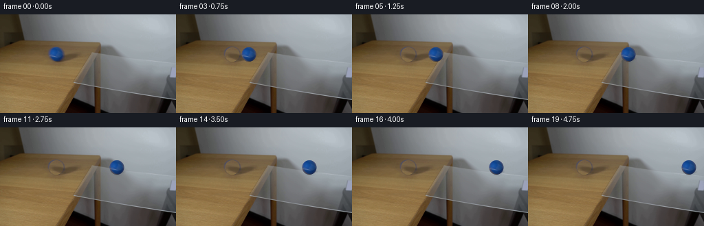
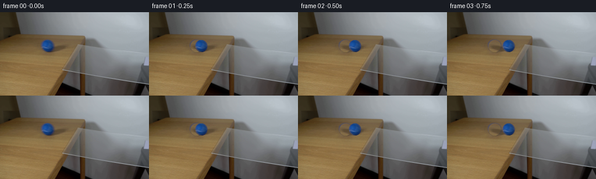

CODING AGENTS AS PIXEL WORLD MODELS
traex/Seed-2.1-Pro-0915 · 0027
点击播放 · 原生 RGB 像素
逐轮保存的候选
回放视频、检查图与代码变化。
每份候选均可单独播放。实际图片检查记录在下方工具轨迹中。
候选 01播放与检查图
点击播放 · 原生 RGB 像素


展开代码变化
--- 上一保存版本
+++ 本次保存版本
@@ -0,0 +1,153 @@
+from pathlib import Path
+
+import numpy as np
+from PIL import Image
+
+import artifact_io
+
+
+ROOT = Path(__file__).resolve().parent
+WIDTH, HEIGHT, FRAME_COUNT, FPS = 256, 144, 20, 4
+BALL_CENTER = (81.5, 58.0)
+RADIUS = 10.4
+
+
+def make_clean_background(frame):
+ """Remove the first-frame ball and its contact shadow using nearby wood."""
+ clean = frame.copy()
+ h, w = frame.shape[:2]
+
+ yy, xx = np.mgrid[0:h, 0:w]
+ dx = xx - BALL_CENTER[0]
+ dy = yy - BALL_CENTER[1]
+ disk = np.sqrt(dx * dx + dy * dy) <= 11.15
+
+ # The original contact shadow extends a few pixels to the lower right.
+ ex = (xx - 86.0) / 10.5
+ ey = (yy - 64.0) / 5.2
+ shadow_area = (ex * ex + ey * ey <= 1.0) & (yy >= 59)
+ affected = disk | shadow_area
+
+ filled = clean.copy()
+ for y in range(44, 72):
+ for x in range(68, 96):
+ if not affected[y, x]:
+ continue
+ # Horizontal wood grain is continuous here, so mirror a clean strip
+ # immediately to the right of the ball into the hidden area.
+ source_x = min(121, max(94, 188 - x))
+ filled[y, x] = frame[y, source_x]
+
+ # Feather only the repaired mask. The rest of the first frame is untouched.
+ feather = np.clip(11.25 - np.sqrt(dx * dx + dy * dy), 0.0, 1.0)
+ sx = (xx - 86.0) / 11.5
+ sy = (yy - 64.0) / 6.2
+ feather = np.maximum(feather, np.clip(1.0 - (sx * sx + sy * sy), 0.0, 1.0) * 0.8)
+ feather *= affected
+ alpha = feather[..., None]
+ clean = (filled.astype(np.float32) * alpha +
+ clean.astype(np.float32) * (1.0 - alpha)).astype(np.uint8)
+ return clean
+
+
+def extract_ball(frame, clean):
+ """Extract an edge-decontaminated ball sprite from the first frame."""
+ x0, y0 = 69, 47
+ size = 26
+ sprite = np.zeros((size, size, 4), dtype=np.uint8)
+
+ for y in range(size):
+ for x in range(size):
+ fx, fy = x0 + x, y0 + y
+ d = np.hypot(fx - BALL_CENTER[0], fy - BALL_CENTER[1])
+ a = np.clip(11.0 - d, 0.0, 1.0)
+ if a <= 0.0:
+ continue
+
+ original = frame[fy, fx].astype(np.float32)
+ background = clean[fy, fx].astype(np.float32)
+ # Undo the edge blending against the wooden table. At low alpha,
+ # gently fall back to the nearest interior color to avoid noise.
+ fg = np.clip((original - (1.0 - a) * background) / max(a, 0.25), 0, 255)
+ if a < 0.75:
+ ix = int(round(BALL_CENTER[0] + 0.82 * (fx - BALL_CENTER[0])))
+ iy = int(round(BALL_CENTER[1] + 0.82 * (fy - BALL_CENTER[1])))
+ interior = frame[iy, ix].astype(np.float32)
+ fg = interior * (1.0 - a) + fg * a
+
+ sprite[y, x, :3] = np.rint(fg).astype(np.uint8)
+ sprite[y, x, 3] = int(round(a * 255))
+
+ return Image.fromarray(sprite, "RGBA")
+
+
+def add_contact_shadow(rgb, center_x, amount=1.0):
+ """Add a small soft shadow on the supporting surface, behind the ball."""
+ overlay = Image.new("RGBA", (WIDTH, HEIGHT), (0, 0, 0, 0))
+ pixels = overlay.load()
+ shadow_cx = center_x + 4.5
+ shadow_cy = 64.7
+
+ for y in range(59, 71):
+ for x in range(int(shadow_cx - 11), int(shadow_cx + 12)):
+ if not (0 <= x < WIDTH and 0 <= y < HEIGHT):
+ continue
+ ex = (x + 0.5 - shadow_cx) / 9.5
+ ey = (y + 0.5 - shadow_cy) / 3.7
+ q = ex * ex + ey * ey
+ if q >= 1.0:
+ continue
+ alpha = (1.0 - q) ** 1.6 * 62 * amount
+ # A slight cool tint makes the same physical shadow read correctly
+ # when the ball crosses from wood onto the transparent glass.
+ pixels[x, y] = (12, 18, 27, int(round(alpha)))
+
+ base = Image.fromarray(rgb, "RGB").convert("RGBA")
+ return np.array(Image.alpha_composite(base, overlay).convert("RGB"))
+
+
+def add_glass_contact(rgb, center_x):
+ """Subtle refracted contact once the ball is over the clear pane."""
+ overlay = Image.new("RGBA", (WIDTH, HEIGHT), (0, 0, 0, 0))
+ pixels = overlay.load()
+ cx = center_x + 2.0
+ cy = 69.0
+
+ for y in range(66, 75):
+ for x in range(int(cx - 10), int(cx + 11)):
+ if not (0 <= x < WIDTH and 0 <= y < HEIGHT):
+ continue
+ ex = (x + 0.5 - cx) / 9.0
+ ey = (y + 0.5 - cy) / 3.0
+ q = ex * ex + ey * ey
+ if q < 1.0:
+ alpha = (1.0 - q) ** 1.5 * 22
+ pixels[x, y] = (35, 58, 82, int(round(alpha)))
+
+ base = Image.fromarray(rgb, "RGB").convert("RGBA")
+ return np.array(Image.alpha_composite(base, overlay).convert("RGB"))
+
+
+def main():
+ first = np.array(Image.open(ROOT / "first_frame.png").convert("RGB"))
+ clean = make_clean_background(first)
+ ball = extract_ball(first, clean)
+
+ frames = [first]
+ for index in range(1, FRAME_COUNT):
+ center_x = BALL_CENTER[0] + 8.0 * index
+ frame = add_contact_shadow(clean, center_x)
+ if center_x > 132:
+ frame = add_glass_contact(frame, center_x)
+
+ rgba = Image.fromarray(frame, "RGB").convert("RGBA")
+ # Sprite crop starts at x=69 with its center at local x=12.5.
+ rgba.alpha_composite(ball, (int(round(center_x - 12.5)), 47))
+ frames.append(np.array(rgba.convert("RGB")))
+
+ frames = np.stack(frames).astype(np.uint8)
+ artifact_io.save(frames, ROOT)
+
+
+if __name__ == "__main__":
+ main()
可观测工具轨迹
实际执行的命令与返回图片。
命令 1exit 127
/bin/bash -lc "ls -la && printf '\\n--- prompt.txt ---\\n' && sed -n '1,240p' prompt.txt && printf '\\n--- GENERATION_RULES.md ---\\n' && sed -n '1,320p' GENERATION_RULES.md && printf '\\n--- first frame ---\\n' && file first_frame.png"
命令 2exit 0
/bin/bash -lc "sed -n '1,260p' artifact_io.py"
命令 3exit 0
/bin/bash -lc "python - <<'PY'
from PIL import Image
import numpy as np
p='first_frame.png'
im=Image.open(p)
print(im.mode, im.size)
a=np.array(im.convert('RGB'))
print(a.shape, a.dtype, a.min(), a.max(), a.mean(axis=(0,1)))
# unique-ish colors and bounds
colors, counts=np.unique(a.reshape(-1,3), axis=0, return_counts=True)
idx=np.argsort(counts)[::-1]
for i in idx[:25]: print(tuple(colors[i]), counts[i])
PY"命令 4exit 0
/bin/bash -lc "python - <<'PY'
from PIL import Image
import numpy as np
a=np.array(Image.open('first_frame.png').convert('RGB'))
R,G,B=[a[:,:,i].astype(int) for i in range(3)]
# candidate masks
masks={
'blue': (B>R+15)&(B>G+5)&(B>60),
'yellow': (R>100)&(G>90)&(B<R-25),
'wood': (R>90)&(R>G+8)&(G>B+8),
'dark': (R<70)&(G<70)&(B<75),
'bright': (R>180)&(G>180)&(B>180),
}
for name,m in masks.items():
ys,xs=np.where(m)
print('\\n',name, m.sum())
if len(xs):
print('bbox',xs.min(),ys.min(),xs.max(),ys.max(),'mean',a[m].mean(0),'med',np.median(a[m],0))
# connected simple via scipy? use cv2 maybe
# blue rows/cols histogram
m=masks['blue']
print('blue rows', [(y,int(m[y].sum())) for y in range(144) if m[y].sum()])
print('blue cols', [(x,int(m[:,x].sum())) for x in range(256) if m[:,x].sum()])
# broad nonwhite / dark row,col counts and means
for y in range(0,144,8):
print('row',y,'mean',np.round(a[y].mean(0),1),'minmax',a[y].min(),a[y].max(),'nonwhite',np.sum(np.max(255-a[y],1)>15),'dark',np.sum(np.max(a[y],1)<100))
PY"命令 5exit 0
/bin/bash -lc "python - <<'PY'
from PIL import Image
import numpy as np
a=np.array(Image.open('first_frame.png').convert('RGB'))
# half-block ANSI, downsample nearest 128x72
b=a.reshape(72,2,128,2,3).mean(axis=(1,3)).astype(int)
for y in range(72):
line=''
for x in range(128):
tr,tg,tb=b[y,x]
br,bg,bb=b[min(y+1,71),x] if False else (0,0,0)
line += f'\\x1b[48;2;{tr};{tg};{tb}m '
print(line+'\\x1b[0m')
PY"命令 6exit 0
/bin/bash -lc "python - <<'PY'
from PIL import Image
import numpy as np
a=np.array(Image.open('first_frame.png').convert('RGB')).astype(int)
# 64x36 average blocks
W,H=64,36
b=a.reshape(H,4,W,4,3).mean((1,3))
chars='@#%*+=-:. '
for y in range(H):
s=''
for x in range(W):
r,g,bb=b[y,x]
# classify hue
if bb>r+12 and bb>g+3: c='B'
elif r>g+12 and g>bb+8: c='W' if r>125 else 'w'
elif r<45 and g<45: c='#'
elif r>170 and g>170 and bb>170: c='.'
else:
lum=(0.3*r+.59*g+.11*bb)
c=chars[int(np.clip(lum/256*len(chars),0,len(chars)-1))]
s+=c
print(s)
PY"命令 7exit 0
/bin/bash -lc "python - <<'PY'
from PIL import Image
import numpy as np, colorsys
a=np.array(Image.open('first_frame.png').convert('RGB'))/255.
# HSV stats and saturated blue
flat=a.reshape(-1,3)
hsv=np.array([colorsys.rgb_to_hsv(*p) for p in flat]).reshape(a.shape)
H,S,V=hsv[...,0],hsv[...,1],hsv[...,2]
for name,m in {
'satblue': (S>.18)&(((H>.52)&(H<.72))),
'satany': S>.35,
'ballmaybe':(S>.15)&(V>.25)&(H>.5)&(H<.72),
}.items():
ys,xs=np.where(m)
print(name,m.sum())
if len(xs): print(xs.min(),ys.min(),xs.max(),ys.max(), 'meanRGB', a[m].mean(0), 'hsvmed', np.median(hsv[m],0))
print('rows',[(y,int(m[y].sum())) for y in range(144) if m[y].sum()][:100])
print('cols',[(x,int(m[:,x].sum())) for x in range(256) if m[:,x].sum()][:100])
# print around ball 50-110 x 40-85, avg 2px grid as hsv labels
for y in range(40,86,2):
line=''
for x in range(50,112,2):
h,s,v=hsv[y,x]
r,g,b=a[y,x]
if s>.25 and .5<h<.72: c='B'
elif s>.2 and h<.15: c='R' if r>.5 else 'r'
elif r>g+.05 and g>b+.03: c='W'
elif abs(r-g)<.03 and abs(g-b)<.03: c='.' if v>.6 else '#'
elif b>r+.03: c='b'
else: c='-'
line+=c
print(f'{y:03d} {line}')
PY"命令 8exit 0
/bin/bash -lc "python - <<'PY'
from PIL import Image
import numpy as np
a=np.array(Image.open('first_frame.png').convert('RGB'))
for y in range(45,72):
line=''
for x in range(68,96):
r,g,b=a[y,x]
if b>r+25 and b>g+15:
# blue shade luminance chars
lum=(r+g+b)/3
c='@%#*+=-:. '[int(np.clip((lum-50)/110*10,0,9))]
line += f'\\x1b[48;2;{r};{g};{b}m{c}'
elif r>g+8 and g>b+5: line += f'\\x1b[48;2;{r};{g};{b}mW'
elif max(r,g,b)-min(r,g,b)<12: line += f'\\x1b[48;2;{r};{g};{b}m.'
else: line += f'\\x1b[48;2;{r};{g};{b}m?'
print(line+'\\x1b[0m')
PY"命令 9exit 0
/bin/bash -lc "python - <<'PY'
from PIL import Image
import numpy as np
a=np.array(Image.open('first_frame.png').convert('RGB')).astype(int)
# classify 2x blocks compact geometry in table/glass region
for y in range(34,100,2):
line=''
for x in range(70,166,2):
block=a[y:y+2,x:x+2].mean((0,1))
r,g,b=block
# dominant class
if r>g+8 and g>b+5: c='W'
elif b>r+8:
c='B' if b>r+35 else 'b'
elif abs(r-g)<6 and abs(g-b)<6:
c='#' if r<70 else ('+' if r<120 else '.')
elif r<80: c='#'
else: c='-'
line+=c
print(f'{y:03d} {line}')
PY"命令 10exit 0
/bin/bash -lc "python - <<'PY'
from PIL import Image
import numpy as np
a=np.array(Image.open('first_frame.png').convert('RGB')).astype(int)
for y in [36,38,39,40,42,46,48,58,68,70,80,90,100,110,120,130,140]:
print('\\nROW',y)
# runs based rough class
vals=[]; start=0; prev=None
for x in range(256):
r,g,b=a[y,x]
if r>g+7 and g>b+4: c='W'
elif b>r+8: c='B' if b>r+35 else 'b'
elif abs(r-g)<6 and abs(g-b)<6: c='#' if r<80 else ('+' if r<135 else '.')
elif r<80: c='#'
else: c='-'
if prev is None: prev=c; start=x
elif c "'!= prev:
vals.append((start,x-1,prev))
start=x; prev=c
vals.append((start,255,prev))
print(vals)
# vertical runs at key x
for x in [95,105,110,112,114,116,118,120,125,130,140,160,200,250]:
print('"'\\nCOL',x)
vals=[]; start=0; prev=None
for y in range(144):
r,g,b=a[y,x]
if r>g+7 and g>b+4: c='W'
elif b>r+8: c='B' if b>r+35 else 'b'
elif abs(r-g)<6 and abs(g-b)<6: c='#' if r<80 else ('+' if r<135 else '.')
elif r<80: c='#'
else: c='-'
if prev is None: prev=c; start=y
elif c "'!= prev:
vals.append((start,y-1,prev)); start=y; prev=c
vals.append((start,143,prev))
print(vals)
PY'命令 11exit 0
/bin/bash -lc "python - <<'PY'
from PIL import Image
import numpy as np
a=np.array(Image.open('first_frame.png').convert('RGB')).astype(int)
for y in range(46,71):
line=''
for x in range(69,95):
r,g,b=a[y,x]
if b>r+20 and b>g+10:
# shade and temperature
lum=(r+g+b)/3
if lum>115: c='+'
elif lum>85: c='='
elif lum>60: c='-'
elif lum>40: c='#'
else:c='@'
if abs(g-r)<8 and b-g<35: c='w' # maybe seam gray-blue?
else: c='.'
line+=c
print(f'{y:02d} {line}')
PY"命令 12exit 0
/bin/bash -lc "python generate.py && python - <<'PY'
from PIL import Image
import numpy as np
from pathlib import Path
root=Path('.')
first=np.array(Image.open('first_frame.png').convert('RGB'))
frames=np.stack([np.array(Image.open(root/'frames'/f'{i:02d}.png').convert('RGB')) for i in range(20)])
print('frames', frames.shape, frames.dtype)
print('first identical:', np.array_equal(frames[0], first))
data=np.load('pixels.npz')
packed=data['pixels']
print('npz packed shape', packed.shape, packed.dtype)
for i in [1,4,8,12,16,19]:
f=frames[i]
# saturated blue bbox in current frame
r,g,b=[f[...,j].astype(int) for j in range(3)]
m=(b>r+20)&(b>g+10)
ys,xs=np.where(m)
print(i, 'changed', np.mean(f "'!= frames[max(0,i-1)], axis=(0,1)).sum(), '"'blue bbox', (xs.min(),ys.min(),xs.max(),ys.max(),m.sum()), 'mean', f[m].mean(0) if m.sum() else None)
print('files', sorted(p.name for p in Path('.').iterdir() if p.is_file()))
PY"保存候选 1 份；完成命令 12 次；可验证图片返回 0 张。原始 API 响应与完整日志保留在本地。